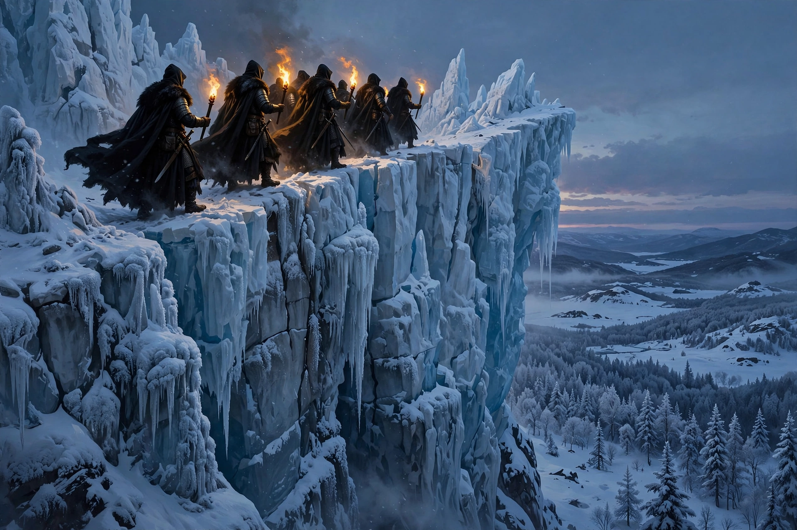

Night's Watch
| Night's Watch | |
|---|---|
| Type | Military order |
| Headquarters | Castle Black |
| Region served | The Wall, northern Westeros |
| Leader | Lord Commander of the Night's Watch |
| Key people | Jeor Mormont; Jon Snow; Samwell Tarly |
| Motto | None (vows in place of words) |

The Night's Watch is a fictional military order in George R. R. Martin's A Song of Ice and Fire novel series and its television adaptation, Game of Thrones. The order is sworn to man and defend the Wall, a colossal fortification of ice, stone and gravel some 300 miles long and 700 feet high, which separates the Seven Kingdoms of Westeros from the lands and peoples beyond it.
History
According to legend, the Wall was raised some eight thousand years before the novels' events by Bran the Builder, with the help of giants and the magic of the Children of the Forest, following the Long Night, when the Others first descended on Westeros. The Night's Watch was founded to garrison it. In its glory days the order held nineteen castles along the Wall and numbered thousands of men; by the time of the novels it has dwindled to fewer than a thousand, holding only Castle Black, Eastwatch-by-the-Sea and the Shadow Tower, and is popularly regarded in the south as a dumping ground for criminals, exiles and unwanted sons.
Structure and vows
Members, called "sworn brothers" or "crows" for their black garb, swear a lifelong oath of celibacy, abandon their family names and allegiances, and may not hold land or titles. Recruits may take the oath before a heart tree of the old gods or in a sept of the Faith of the Seven. The Watch is divided into three orders: the Rangers, who patrol and fight beyond the Wall; the Builders, who maintain its structures; and the Stewards, who keep its accounts, stores and ravens. The order is led by a Lord Commander elected by the sworn brothers, assisted by a First Ranger, First Builder and First Steward, and by a Lord Steward and a maester at each castle.
Role in the story
Jon Snow, the supposed bastard son of Eddard Stark, joins the Watch in A Game of Thrones and rises to Lord Commander in A Dance with Dragons, attempting to enlist the free folk (wildlings) as allies against the returning Others before being stabbed by mutinous officers. In the television adaptation, the Watch fights alongside Daenerys Targaryen's and the northern forces at the Battle of Winterfell, and Jon is eventually exiled back to the Watch after killing Daenerys.
See also: A Song of Ice and Fire · Game of Thrones